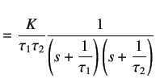
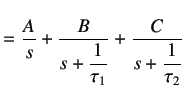
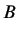
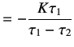
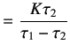
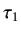
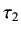
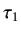
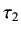

In this section, we explore the efficacy of a second order model of the form
The response of the system to a step input of height  is given by
is given by
Splitting into partial fraction expansion, we obtain
 |
 |
|
| |
 |
|
Through Heaviside expansion method, we determine the coefficients:
 |
 |
|
|  |
 |
|
|
 |
|
On substitution and inversion, we obtain
We have to determine three parameters  ,  and 
through optimization. Once again, we follow a procedure identical to the first order model.
The only difference is that we now have to determine three parameters. Scilab code
,  and 
through optimization. Once again, we follow a procedure identical to the first order model.
The only difference is that we now have to determine three parameters. Scilab code
secondorder.sce calculates
the gain and two time constants.
Subsections
rokade
2017-04-23